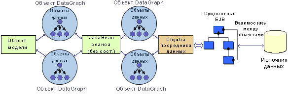

| Концепция: Варианты структуры Web-приложений |
 |
|
| Связанные элементы |
|---|
ВведениеSDO - это спецификация модели программирования, обеспечивающая стандартизированный, не зависящий от источника и не требующий подключения доступ к базовым данным. Модель допускает извлечение данных из любого типа источника (реляционная база данных, сущностные объекты EJB, Web-служба, источник данных XML и т.д.) и их стандартизированное представление в виде структурированного графа. SDO обеспечивает выполнение операций при отсутствии подключения за счет извлечения графа данных и его независимости от соединения или транзакций с базовым хранилищем. Данная спецификация предложена к утверждению в JCP как Java Specification Request (JSR) 235. АрхитектураАрхитектура SDO использует стандартизированный уровень доступа к данным (служба посредника данных) для возврата графов данных (DataGraph) клиентам, обращающимся к неоднородным источникам данных. На рисунке 4 показаны компоненты архитектуры SDO.
Рисунок 4: Объект DataObject архитектуры SDO В объекте DataObject хранятся фактические данные (например, значения примитивов или строки реляционной базы данных), а также возможные ссылки на другие объекты DataObject. При этом можно определять тип, взаимоотношения и ограничения этих данных. DataGraphВ объекте DataGraph хранится набор объектов DataObject. Обычно DataGraph представляет собой единицу передачи информации между компонентами архитектуры. В нем хранятся все внесенные в данные изменения, включая новые, измененные и удаленные объекты DataObject. Служба посредника данныхСлужба посредника данных обеспечивает взаимодействие с источником данных и создание объектов DataGraph, представляющих его данные. Стандартный формат представления данных преобразуется в графическое представление SDO с помощью модульной службы. Посредник также обеспечивает применение к источнику данных изменений, внесенных в DataGraph. Применимость структурыТехнология SDO обеспечивает простую интеграцию структуры и инструментов. В контексте JSF и других структур MVC, следует рассмотреть два решения: Связывание компонента пользовательского интерфейса с SDO (JSF) В структуре JSF значения компонентов пользовательского Web-интерфейса можно декларативно связать с объектами SDO для извлечения требуемых данных. Например, можно связать компонент DataTable с SDO, обеспечив тем самым извлечение информации из базового источника данных. Такое сочетание делает подключение компонентов интерфейса к источникам данных очень простым, не требуя абсолютно никакого программирования. На рисунке 5 показана архитектура, показанная в результате связывания компонентов JSF пользовательского интерфейса с SDO.
Рисунок 5: Использование SDO с JSF Моделирование объектов в SDO (любая структура MVC) Модельный уровень структуры MVC может использовать SDO для обращения к базовым данным. На рисунке 6 приведен пример модели клиента, использующей SDO для доступа к данным, сохраняемым с помощью сущностных объектов EJB. Моделируемый объект использует объекты DataGraph, возвращенные фасадом сеансового EJB без сохранения состояния. Фасад сеансового объекта JavaBean, в свою очередь, извлекает объекты DataGraph из посредника, который служит фасадом данных для сущностного объекта EJB, основанного на механизме хранилища.  Рисунок 6: Использование SDO с моделируемыми объектами и EJB РесурсыПо следующим ссылкам приведена дополнительная информация о средах приложений и технологиях компонентов, описанных в данном документе:
|
© Copyright IBM Corp. 1987, 2006. Все права защищены.. |